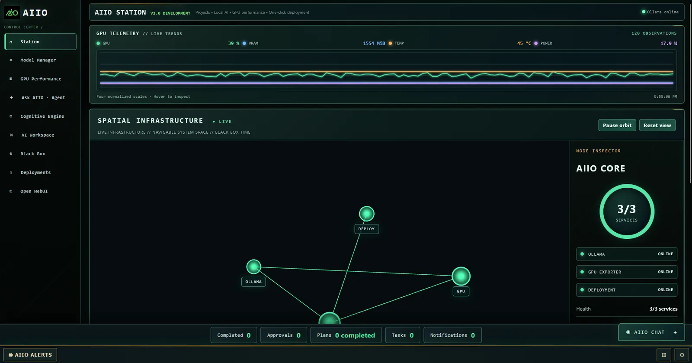
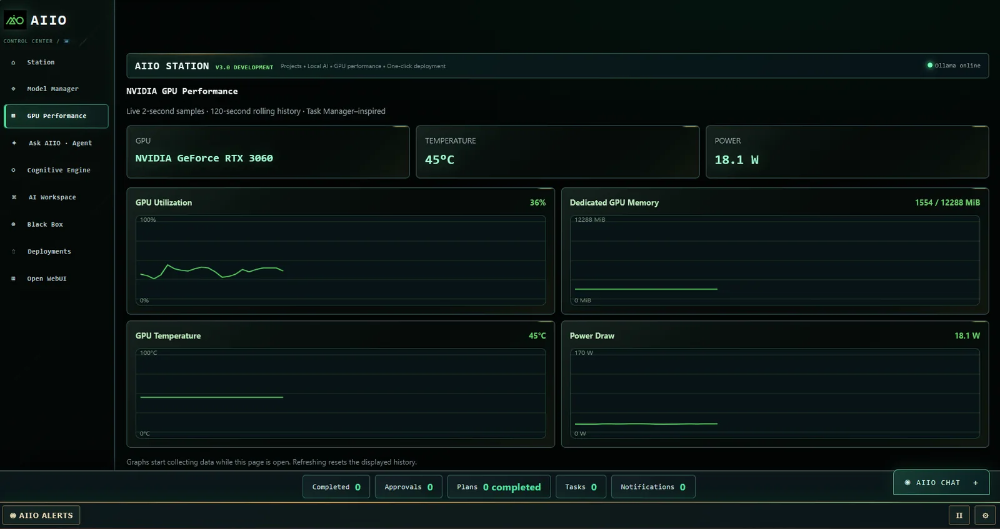
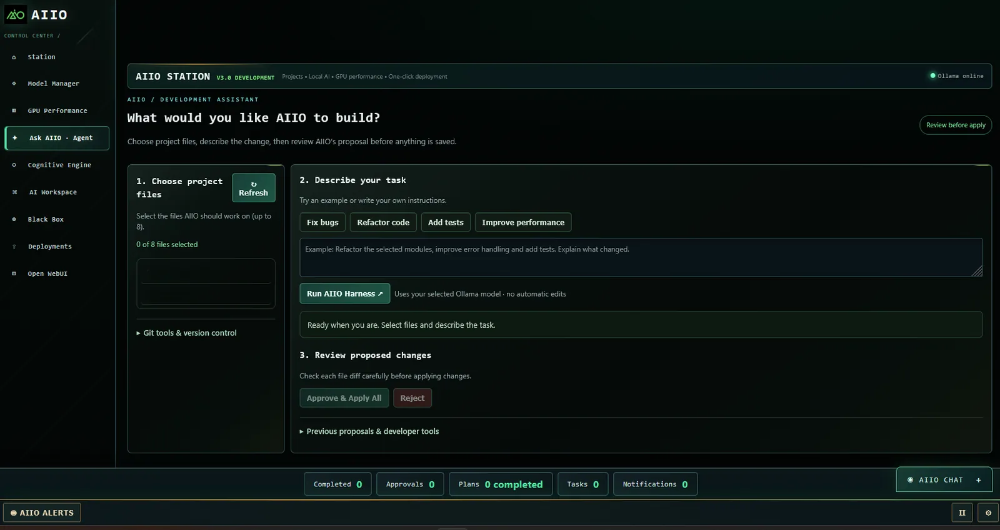
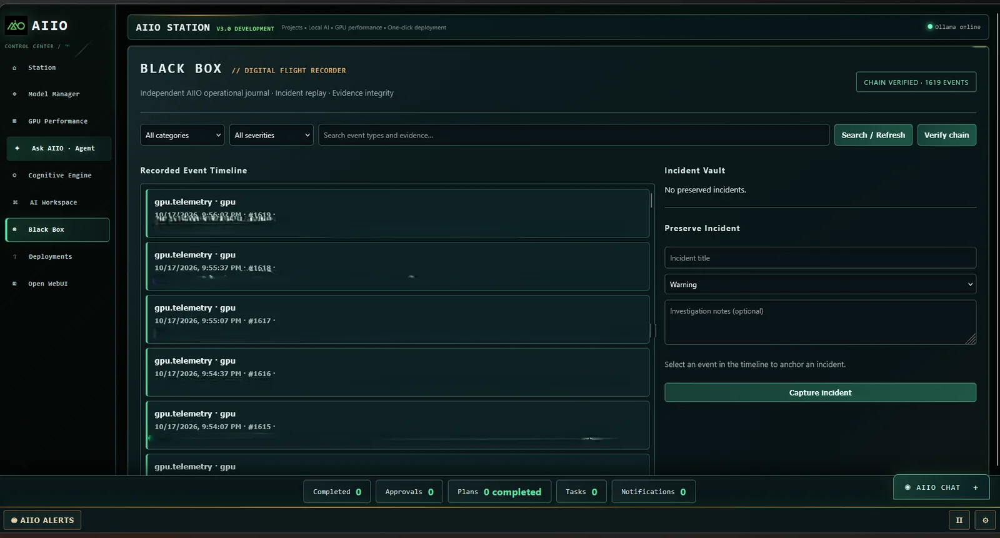
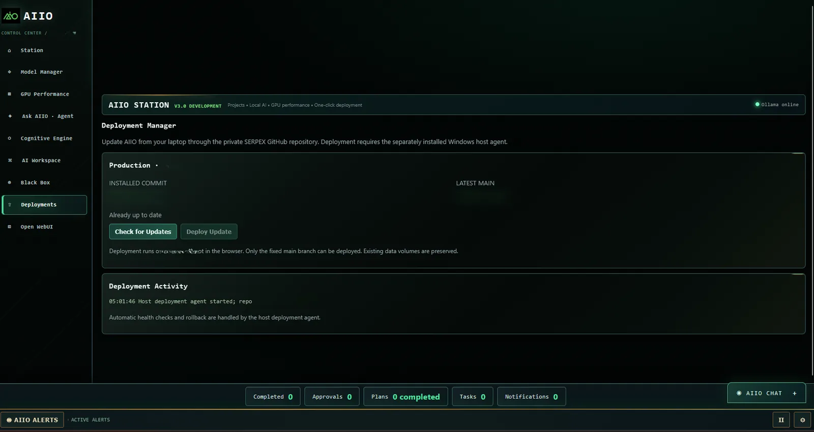

It Started as a
CPU-to-GPU Migration.
It Became AIIO Station.
What began as a performance upgrade for a local AI chatbot evolved into a deployed engineering platform designed to support MONITROPE development, operational visibility, and AI-assisted technical workflows.
A Simple Upgrade Exposed a Bigger Opportunity.
AIIO began as a general-purpose local AI chatbot running on CPU-based infrastructure. The initial task was practical: move inference to a GPU-equipped workstation to improve the environment available for local AI workloads.
But MONITROPE, a separate behavioral monitoring project under development, needed more than a chat window. It needed a useful local assistant for development, troubleshooting, code analysis, and eventually tighter application integration. That changed the direction of the project.
The engineering question shifted from “How do I run this model faster?” to “How do I turn this into an operational capability?”
General Local Chat
CPU-hosted inference and experimentation with locally running language models.
CPU → GPU Migration
Move the inference workload to a GPU-capable Docker environment, bringing new runtime and integration challenges.
AIIO Station
A deployed, actively used platform with a growing operational interface and development-support capabilities.
From Inference Service to Integrated Platform.
This is a high-level conceptual view of the platform and its intended relationship to MONITROPE. It illustrates engineering responsibilities without disclosing private network topology, repository details, or deployment paths.
Not Just a GPU Upgrade. A Running Docker Workload.
AIIO Station is deployed and actively used in a Docker-containerized environment on a Windows workstation equipped with an NVIDIA RTX 3060 (12 GB VRAM). Ollama provides local AI inference. This deployment moved the project beyond a CPU-hosted chatbot and into an operational service environment.
Windows GPU Workstation
Physical compute platform with an RTX 3060 GPU. The host supplies the GPU resources required by the local inference workload.
Docker Containerization
AIIO runs as a containerized workload. Container lifecycle, runtime configuration, and service connectivity became part of the engineering and troubleshooting scope.
Ollama + GPU Access
Local inference depends on the model service and a correctly configured path to GPU acceleration—not merely the presence of a GPU in the host.
docker exec aiio nvidia-smi command revealed that nvidia-smi was not present in the container's PATH. That error alone did not prove GPU passthrough was broken. Diagnosing the difference between a missing diagnostic executable and actual GPU availability is an example of the practical troubleshooting involved. The diagram groups logical services; it does not assert that every component shares one container.Runtime Configuration
GPU access requires the host driver, Docker's GPU-capable runtime path, and the container workload to be configured consistently.
Operational Validation
Container status, inference behavior, and GPU telemetry provide complementary evidence. A running container alone is not proof that inference is GPU-accelerated.
Deployment Ownership
The system is deployed and in active use, with continued iteration on operational tooling and application functionality rather than a claim of a finished production release.
The Application, Not a Mockup.
Screenshots captured from AIIO Station during active development and deployment. Select any image to view it at full resolution.





What I Actually Engineered.
Changed the Architecture
Reassessed the compute environment and moved from CPU-hosted inference toward GPU-enabled containerized services as requirements expanded.
Worked Through the Failures
Investigated Docker runtime behavior, GPU access and tooling, service startup, and caching issues encountered during implementation.
Connected the Components
Brought together local inference, telemetry, service visibility, and an operator-facing application interface.
Moved Beyond a Demo
Deployed AIIO for active use and continued iterating on deployment visibility, diagnostics, and operational workflows.
Checked Real Behavior
Used container inspection, service status, GPU monitoring, and application testing to distinguish working functionality from assumptions.
Made the Work Explainable
Captured architectural decisions, failure modes, and lessons learned while separating public evidence from sensitive internal details.
The Migration Was Only the Beginning.
Decision: Use Available GPU Compute
Moving inference to GPU resources addressed the original performance-oriented objective and created room for broader experimentation.
Decision: Add Observability
GPU and service visibility made the environment easier to understand, troubleshoot, and operate.
Decision: Retain Human Oversight
Development-assistant workflows emphasize reviewing proposed changes rather than treating generated code as automatically correct.
AI-Assisted Code. Human-Directed Engineering.
AIIO was built using AI-assisted coding tools. I do not present its generated code as something I manually authored line by line. My contribution is in identifying the need, defining the workflows, making infrastructure and integration decisions, troubleshooting real failures, testing behavior, and deploying the result.
| AI-assisted implementation | My engineering responsibility |
|---|---|
| Application code and interface generation | Requirements, workflow design, review, and acceptance criteria |
| Implementation suggestions and code revisions | Evaluating trade-offs, testing behavior, and directing corrections |
| Scripts and diagnostic suggestions | Configuring infrastructure, investigating errors, and validating fixes |
| Documentation drafts | Explaining decisions, recording evidence, and protecting sensitive details |
The Transferable Engineering Skills.
Digital Engineering
Translating an evolving need into an integrated technical system with a documented architecture.
Infrastructure Engineering
GPU workloads, operating systems, containerization, service integration, and performance visibility.
Operational Ownership
Troubleshooting, deployment, verification, documentation, and continued improvement after launch.